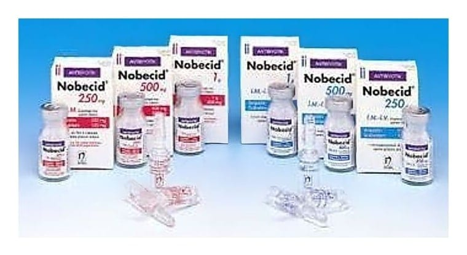

Nobecid 250 mg/ 5 ml Süspansiyon Hazırlamak İçin Toz, 40 ml

Ne için kullanılır
KT · Bölüm 1NOBECİD, ağızdan alınan, sulandırıldıktan sonra elde edilen süspansiyonun her 5 ml’sinde 250 mg sultamisilin içeren bir antibiyotiktir.
Metal kapaklı amber renkli cam şişe içinde sulandırılmaya hazır toz olarak sunulmaktadır.
Ambalaj içinde ayrıca ölçekli (5ml) kaşık bulunmaktadır.
NOBECİD, aşağıdaki durumlarda kullanılmaktadır:
NOBECİD, belirli mikropların neden olduğu sinüs iltihabı, orta kulak iltihabı, bademcik iltihabı dahil olmak üzere üst solunum yolu enfeksiyonları; akciğer iltihabı, bronşit dahil olmak üzere alt solunum yolu enfeksiyonları; idrar yolu ve böbrek enfeksiyonları; deri ve yumuşak doku enfeksiyonları ve bel soğukluğu enfeksiyonlarının tedavisinde kullanılmaktadır.